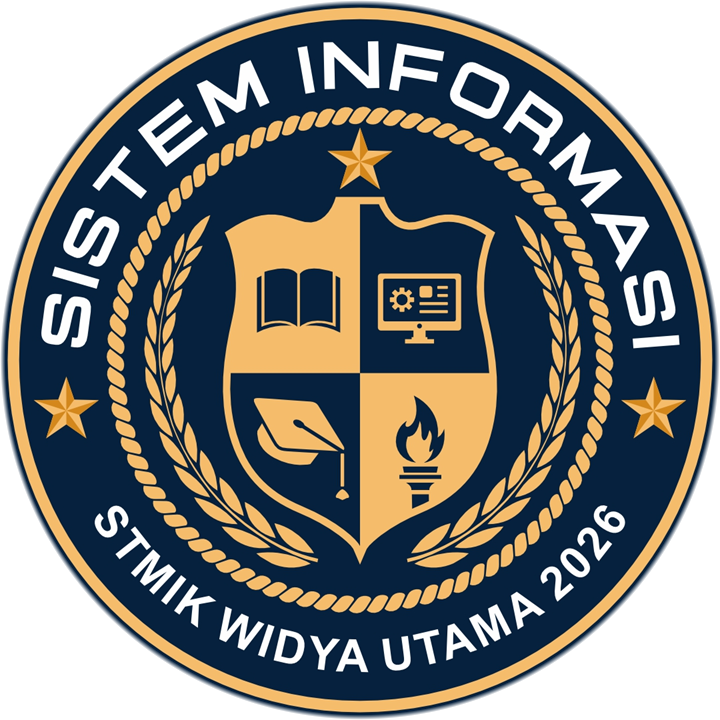

Sistem Informasi 2026 · STMIK Widya Utama
Satu angkatan,
satu ruang
untuk bertumbuh.
Hub digital kelas Sistem Informasi 2026. Tempat profil teman sekelas, jejak perjalanan angkatan, foto kegiatan, playlist kelas, dan alat bantu akademik berkumpul dalam satu ruang yang rapi.

Agenda terdekat
Mulai dari sini
Jelajahi ruang kelas
Sekilas angkatan
Kelas kecil, cerita panjang.
Satu angkatan yang tumbuh bersama sejak PKKMB 2026 — dari kelas pagi, begadang tugas, sampai proyek kelas pertama.
Wajah kelas
Kenalan dulu dengan teman sekelas.
Empat wajah pertama dari 157 anggota SI 2026. Klik kartu untuk profil dan QR Instagram.
Jejak langkah
Perjalanan yang sudah kita lewati.
Geser ke samping untuk melihat linimasa lengkap.
Bagikan link ini, ACC-nya jadi rapi.
Link menampilkan preview Open Graph yang jelas di WhatsApp — lengkap dengan logo kelas. Pasang juga sebagai aplikasi supaya akses anggota lebih cepat.